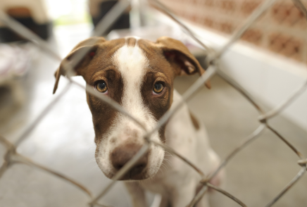
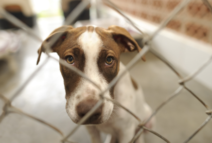
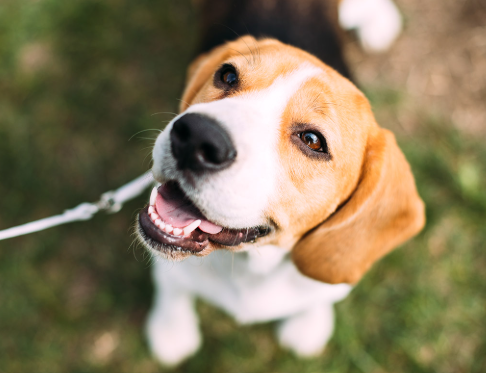
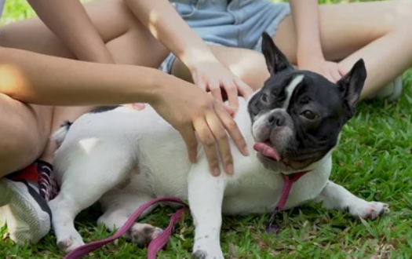

January 21, 2025
Donated $300 to Tuscaloosa Shelter! #savetheanimals #charity

Father | Dog Lover | Banking Enthusiast
Location: Tuscaloosa, AL
Hello. I'm John Wang, a father of two beautiful girls and a dog fanatic. I am the proud owner of a beagle named Daisy. When I'm not working at Crimson Credit Union, I like to play fetch with Daisy.
January 21, 2025
Donated $300 to Tuscaloosa Shelter! #savetheanimals #charity
January 17, 2025
My dog Daisy turns 7 today. I turn 55. #happybirthday #dog
January 14, 2025
Proud of my girls. Volunteer at the shelter. #charity
January 11, 2025
Enjoying a nice cup of coffee while working on my latest work project. ☕💻 #CCU